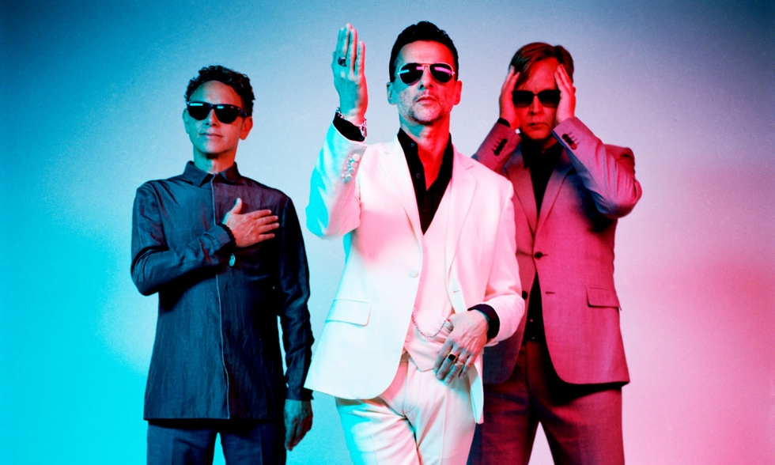
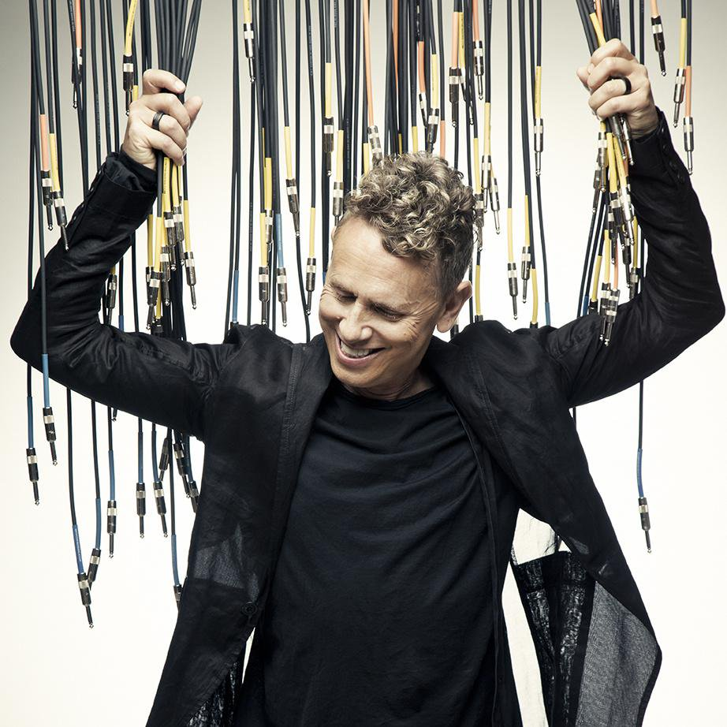
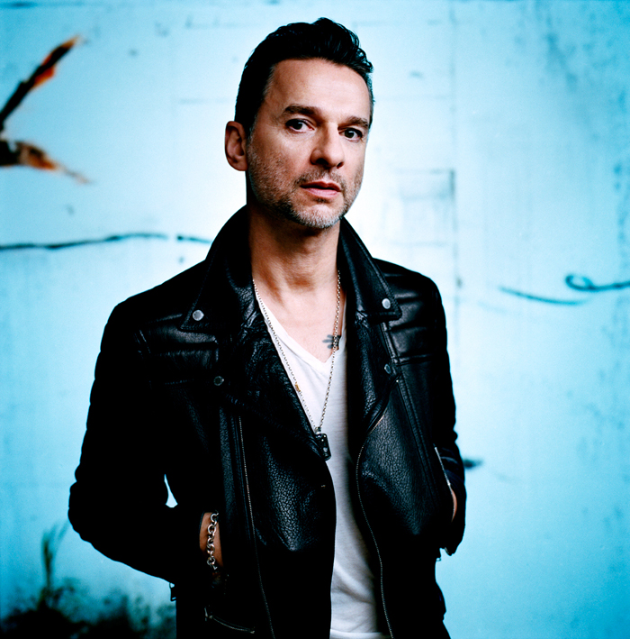
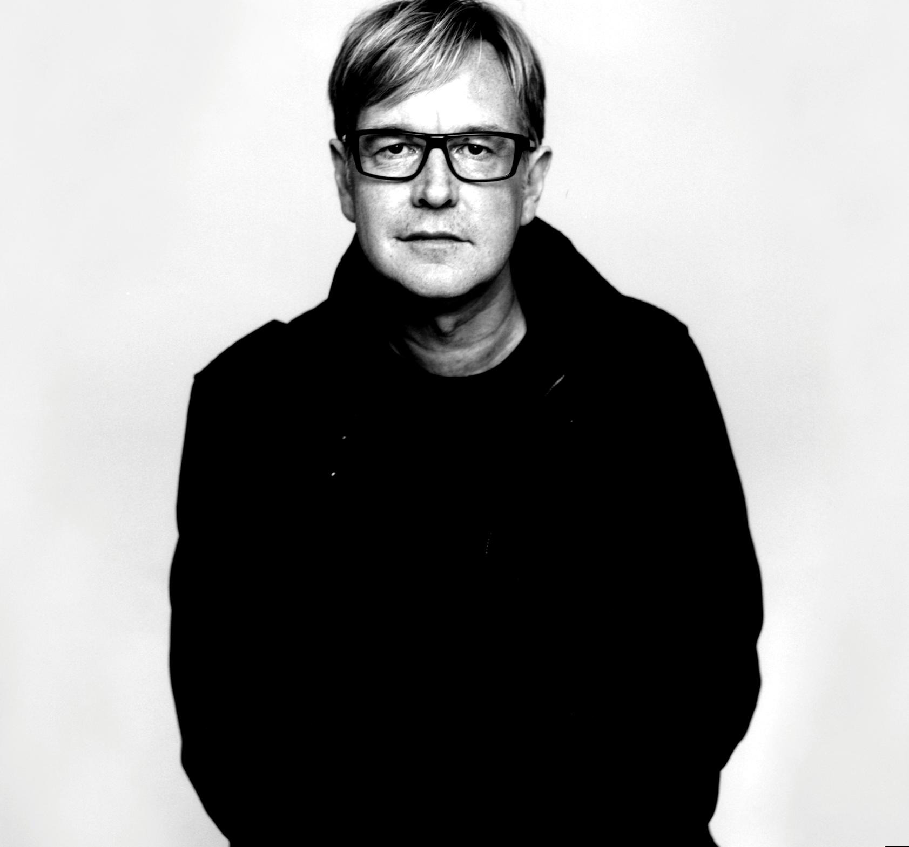

Depeche Mode (в переводе с фр. — «Вестник моды») — британская электроник-рок-группа,
образовавшаяся в 1980 году в городе Базилдон (графство Эссекс). Эта группа создала собственный стиль
в жанрах электронной и рок-музыки и является одной из наиболее успешных групп мира.
Мартин Гор

Британский композитор, певец, гитарист, клавишник и
диджей, состоит в группе Depeche Mode со времени её
основания в 1980 году. За более чем три десятилетия
существования коллектива им написано подавляющее
большинство песен группы.
Подробнее...
Дэйв Гаан

Британский музыкант, вокалист группы Depeche Mode
с момента её основания в 1980 году.
Журнал «Q» в 2007 году поставил Гаана на 73 место
в списке «100 величайших певцов»
и на 27 в списке «100 величайших фронтменов».
Подробнее...
Энди Флетчер

Клавишник-басист группы «Depeche Mode».
Подробнее...